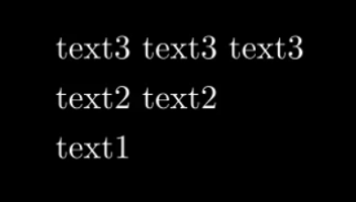

VGroup群组类¶
声明
早期Elteoremadebeethoven有个仓库和配套的youtude教学视频， Animation course with Manim ，小破站有搬运 BV1W4411Z7Zt ， 然后cai-hust学习并且做了相关的教程MarkDown笔记 cai-hust_manim-tutorial-CN ， 这部分不是我写的，我只是想把Markdown、pdf等资料整合编辑成方便的文档格式，以方便查阅使用Manim，cai-hust已授权，表示标明链接仓库就行。
10. 群组类VGroup¶
可以将多个图像合并为一个组进行批量同步操作(自我理解为Vector Group的缩写)
someObjectGroup = VGroup(someObject1,someObject2,…)
10.1 arrange()¶
someObjectGroup.arrange(DIRECTION,aligned_edge = DIRECTION,buff=number)
DIRECTION：以someObject1,someObject2,…顺序按照此方向排列
aligned_edge：对齐
buff：成员之间的距离
例：
class ArrangeObjects(Scene):
def construct(self):
text1 = TextMobject("text1")
text2 = TextMobject("text2 text2")
text3 = TextMobject("text3 text3 text3")
textgroup = VGroup(text1,text2,text3)
textgroup.arrange(
UP,
aligned_edge = LEFT,
buff=0.4
)
self.add(textgroup)
self.wait()

动画效果：
因为arrange第一个参数不在config里面，需要单独放在外面
self.play(
text_group.arrange,
UP,
{"aligned_edge":RIGHT,"buff":2}
)